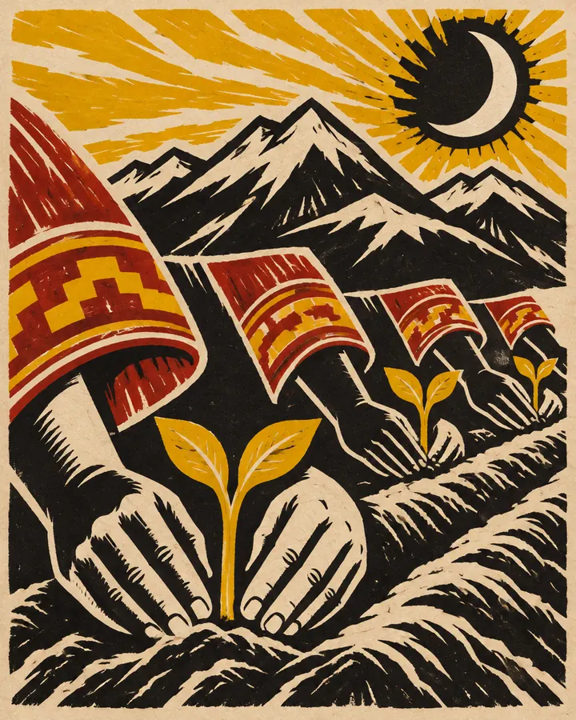
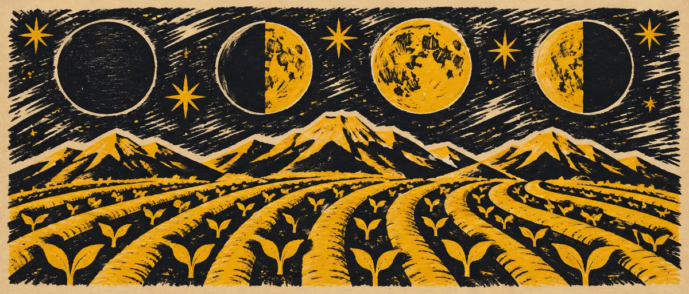

Huerto demostrativo Sumak Kawsay
Comunidad demostrativa Sumak Kawsay
ManzanillaRudaToronjilHierba luisa
- Provincia
- Pichincha
- Parroquia
- Tumbaco
- Plantas
- 4
- Cultivos
- 4
Maqueta B · «Minga: el cartel comunitario» · datos reales de la demostración · no es la app
Huertos medicinales comunitarios del Ecuador: dónde están, qué siembran y cómo lo cuidan. Elige uno en el mapa.

Comunidad demostrativa Sumak Kawsay
ManzanillaRudaToronjilHierba luisa
Familia demostrativa Hampi · aún no registra plantas
Barrio demostrativo Jambi Muyu · aún no registra plantas
Creciente y llena para sembrar; menguante para semillas y raíces; oscura para preparar la tierra. Mira el calendario de este mes.
Ver el calendario lunar
